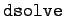
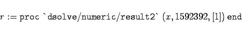

Inhalt Index DeskTop Bronstein

 Numerische Mathematik Nutzung von Computern Anwendung von Computeralgebrasystemen Maple
Numerische Mathematik Nutzung von Computern Anwendung von Computeralgebrasystemen Maple


Im Kapitel Computeralgebrasysteme, Lösung von Differentialgleichungen mit Maple wird die Lösung von gewöhnlichen Differentialgleichungen mit der Operation  behandelt. In den meisten Fällen ist es jedoch nicht möglich, die Lösung in geschlossener Form anzugeben. In diesen Fällen kann man versuchen, die Gleichung numerisch zu lösen, wobei entsprechende Anfangsbedingungen gegeben sein müssen.
Dafür wird der Befehl in der Form
 |
(19.292) |
mit der Option  als drittes Argument verwendet. Hier enthält das Argument dgln neben der eigentlichen Differentialgleichung auch die Anfangsbedingungen. Das Resultat dieser Operation ist eine Prozedur, die, wenn man sie z.B. mit f bezeichnet, durch den Aufruf f(t) den Wert der Lösung für den Wert t der unabhängigen Variablen berechnet.
als drittes Argument verwendet. Hier enthält das Argument dgln neben der eigentlichen Differentialgleichung auch die Anfangsbedingungen. Das Resultat dieser Operation ist eine Prozedur, die, wenn man sie z.B. mit f bezeichnet, durch den Aufruf f(t) den Wert der Lösung für den Wert t der unabhängigen Variablen berechnet.
Maple benutzt für diesen Prozeß das RUNGE-KUTTA-Verfahren. Die voreingestellte Genauigkeit für den relativen und den absoluten Fehler beträgt . Mit den globalen Symbolen  und
und  kann der Nutzer diese Einstellungen ändern.
kann der Nutzer diese Einstellungen ändern.
Treten bei der Berechnung Probleme auf, dann zeigt Maple dies durch verschiedenartige Meldungen an.
| Beispiel |
|
Behandlung des Beispiels zum RUNGE-KUTTA-Verfahren mit Maple. Man erhält 
|